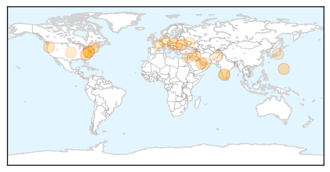
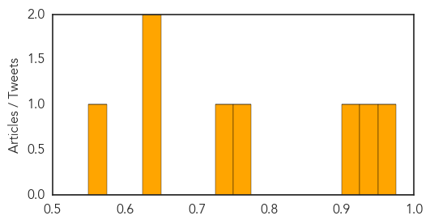

Unknown
30-Day Web Trend
0 alerts, 0 warnings

30-Day Twitter Trend
0 alerts, 0 warnings

Article Locations
Article Confidences

Top Articles:
- 0.937
- The Rocky Mount Telegram
- 0.931
- Security forces combat malaria in Tripura
- 0.917
- Chicago Tribune
- 0.917
- Chicago Tribune
- 0.917
- Chicago Tribune
- 0.917
- Chicago Tribune
- 0.901
- Not enough done to eradicate rabies, say experts
- 0.897
- Misery, and mysteries, persist
- 0.812
- Doctors being airlifted to malaria-hit areas in Tripura
- 0.802
- Burgers, fries, and anthrax; 5 hospitalized in Hungary from tainted beef
- 0.663
- IBM, others to help public health officials improve food safety
- 0.599
- No JE cases in Kampung Selamat, Bagan Jermal
- 0.585
- Endometriosis can cause infertility in women - Emirates 24
- 0.581
- Ukrainian forces retake rebel stronghold of Slaviansk
- 0.581
- Taliban sets 200 fuel trucks ablaze near Kabul
- 0.581
- Video: Eiffel Tower hosts world's premier show-jumping competition
- 0.581
- Murdered Palestinian teen was 'burned alive'
- 0.581
- ISIS leader Baghdadi 'demands Muslim obedience' in video
- 0.581
- France tightens security on US-bound flights
- 0.546
- 6 people hospitalized with anthrax poisoning in Hungary - Xinhua
- 0.515
- Water Shortages Add to Woes to Syria and Neighbouring Countries
- 0.506
- Concerted efforts needed to tackle rabies: Khader
- 0.505
- Anthrax in beef hospitalizes five in Hungary
Top Tweets:
-
No tweets found for Jul 05, 2014
Dengue Fever
30-Day Web Trend
2 alerts, 2 warnings

30-Day Twitter Trend
2 alerts, 0 warnings

Article Locations

Article Confidences
Top Articles:
- 0.974
- Dodging the dengue fever bullet
- 0.942
- SurSur capitol warns public against dengue - Philippines
- 0.918
- 83 Percent Drop in Dengue Fever Cases
- 0.764
- Guan Eng: Don't turn JE cases into racial issue
- 0.738
- Dengue fever plagues Thailand's Samui
- 0.646
- Govt urged to give mosquito net incentive to curb dengue
- 0.636
- Give mosquito net incentive to curb dengue, Government urged - Nation
- 0.572
- Drudge Report critic: His 'Typhoid Mary-style' lies stigmatize immigrants
Top Tweets:
-
No tweets found for Jul 05, 2014